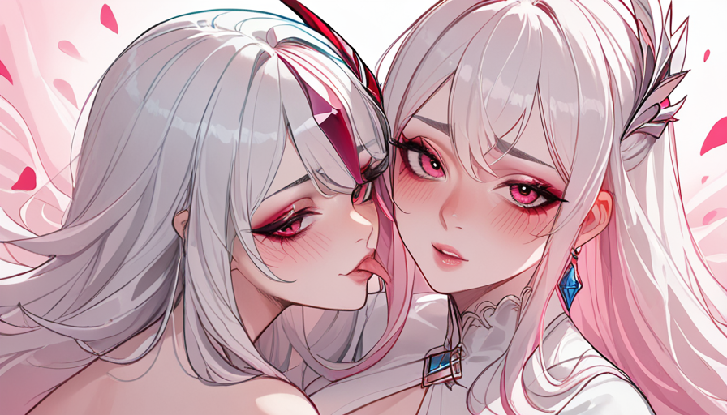

我们는 주어진 지시사항을 바탕으로 블로그 포스트를 작성해야 합니다. 주제는 "다크소울 1편 출시 전 데모 버전에서만 존재했던 지역과 적 배치의 차이" 이지만, 관점은 "인디 개발자"의 시점에서 "스팀 출시 3일 만에 판매 중단된 게임의 진짜 사유"라는 갈등을 중심으로 서사 전개해야 합니다. 또한 "공덕 셔츠룸 추천정보" 키워드를 자연스럽게 연결해야 합니다.
우선 뉴비코스프레, 설명충, 과도한친절형 캐릭터를 유지하면서 인터뷰 형식으로 작성해야 합니다. 질문, 답변, 해석이 번갈아 나와야 합니다. 첫 문장은 핵심 정보나 질문으로 시작해야 하며, 제목은 포스트 첫 줄에 `` 형식으로 표기해야 합니다. 이미지 태그도 포함해야 합니다.
주제와 관련된 구체적 내용: 다크소울 1편 데모 버전에서만 있었던 지역과 적 배치 차이에 대해 깊이 있는 지식을 보여주되, 금지 지식(엘든링, 소울류 난이도, 스팀 인디 추천)은 언급 금지. 대신 마이너 정보를 소환해야 함.
또한 "인디 개발자" 시점에서 "스팀 출시 3일 만에 판매 중단된 게임의 진짜 사유"라는 갈등을 서사로 풀어야 함. 이는 다크소울 데모와 직접 연결되지 않을 수 있지만, 주제를 비유하거나 유추하는 방식으로 연결할 수 있음.
검색 의도 대응: 주제와 관련된 세부 질문, 선택 조건, 실패 원인, 비교 기준 중 최소 두 가지 다루기.
구체성 원칙: 버전명, 모델명, 연도, 오류코드는 필요할 때만. 대신 조건, 절차, 관찰 포인트, 예외를 구체적으로.
사실성 우선: 불확실한 수치나 인용은 만들지 말고 일반 원리로.
말투: 자연스러운 말투, 경험자가 옆에서 얘기하는 듯.
길이 400-500단어. 문단 2-4문장, 더블 개행으로 구분. 소제목 활용 가능. 제목 금지? (포스트 상단에 별도 제목을 붙이지 말라고 했지만, [제목: ...] 형식은 허용된 것 같음. 출력 본문 첫 줄에 제목 형식으로 시작하라고 했으므로 그렇게 함.
이미지:

POST DNA: myth-counterexample 구조, 현장 관찰, 도입 일반적 조언 부정, 결말 세 질문.
키워드 "공덕 셔츠룸 추천정보"를 자연스럽게 연결해야 함. 예를 들어, 다크소울 데모 버전의 미공개 요소를 분석하는 것이 마치 공덕 셔츠룸 추천정보를 찾는 것처럼 숨겨진 정보를 파헤치는 과정과 비유할 수 있음. 또는 "사실 이런 숨겨진 디테일을 찾는 건 공덕 셔츠룸 추천정보를 고를 때처럼 꼼꼼하게 봐야 하는데..." 식으로 연결.
캐릭터 유지: 뉴비코스프레 - "저 잘 몰라서 그러는데...", 설명충 - 상세하게 설명, 과도한친절형 - 이모티콘 남발, 지나친 칭송.
인터뷰 형식: 질문, 답변, 해석이 번갈아 나오도록. 예를 들어, 필자가 질문하고 다른 사람(인터뷰 대상)이 답변하는 형식? 또는 필자가 독자에게 질문하는 형식? 여기서는 "정보 큐레이터"의 역할로 "작성자의 해석"이 포함된 인터뷰 형식이므로, 필자가 질문하고, 자신이 답변하면서 해석을 덧붙이는 방식으로 할 수 있음. 즉, 1인 인터뷰 형식.
구체적 구성:
도입: 일반적인 조언 부정. "다크소울 데모 버전 이야기? 보통은 '초기 기획이 달랐다'고만 말하는데, 실제로 파보면... 저도 처음 알았거든요? 근데 이게 꼭 게임 개발자들만 알면 아까운 정보더라고요."
이후 인터뷰 형식으로 전환.
질문 1: "그럼 데모 버전에서만 볼 수 있었던 지역이 있다고 들었는데, 정말 있었나요?"
답변: (설명충 스타일로 상세히 설명, 예를 들어 "Undead Asylum이 원래는 지금이랑 구조가 완전 달랐어요. 특히..." 등)
해석: (작성자의 해석) "이런 차이는 게임의 초기 콘셉트가 얼마나 바뀌었는지 보여주는 단서죠."
질문 2: "적 배치 차이는 어떤가요?" 등
중간에 "공덕 셔츠룸 추천정보" 키워드 연결: 예를 들어 "이런 디테일을 찾는 건 마치 공덕 셔츠룸 추천정보를 찾을 때처럼, 표면에 안 보이는 평판이나 실제 이용 후기를 꼼꼼히 따져야 하는 것과 비슷해요. ^^"
결말: 세 가지 확인 질문. "데모 버전의 데이터를 복원하려면 에뮬레이터 버전이 맞는지 확인하셨나요? 파일 해시값을 검증하셨나요? 그리고 혹시 모르니 백업은 하셨나요?"
아이디어 구
함께 보면 좋은 정보
- 관련 업계 트렌드와 통계는 hwagog-doorway에 정리되어 있습니다.
- 자세한 기술 명세 가이드는 공식 가이드 커뮤니티를 참고하십시오.